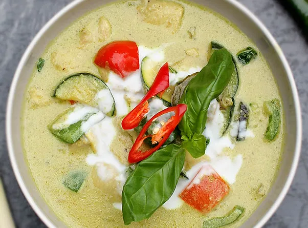

Thai Green Curry

Thai Green Curry
authentic Thai Green Curry recipe. If you can make a good green curry
then you can pretty much make any kind of Thai coconut based curry.
They are all very similar once you have the basics mastered.
Inredients
- 400 ml Coconut Milk
- 2 tbsp Green Curry Paste
- 300 g Sliced Chicken Breast
- 3 tbsp Fish Sauce
- 50 g Palm Sugar
- 50 g Sliced Aubergine
- 50 g Sliced Green Pepper
- 50 g Sliced Courgettes
- 30 g Mange Tout
- 3 Kaffir Lime Leaves
- 3 Basil Leaves
- 1 Long Red Chilli
- 1 sprig Basil
Steps
- Put a quarter of the can of coconut milk in the sauce pan or wok and
let it simmer for a couple of minutes
- Add your curry paste and stir it into the coconut milk until it's all mixed together.
- Let it simmer for at least 5 minutes until it becomes fragrant. The longer you leave it
simmering the more flavoursome your curry will be! (This is the most important part of
the recipe and many green curries end up tasting terrible because the curry paste isn't
left to simmer for long enough).
- Add the chicken and stir it into the curry paste until all the chicken is covered.
- Add the remainder of the coconut milk and turn the heat up and bring it to the boil
before reducing the heat again to let it simmer.
- Add the sugar and fish sauce.
- Stir and then taste. (You can add more sugar or more fish sauce if the flavour isn't strong enough).
- Add the aubergine first (as these take longer to cook)
- When it begins to boil again you can add the courgettes, baby corn and kaffir lime leaves.
- Bring it to the boil once more and that's it.
- Spoon it into a serving bowl and sprinkle with the basil leaves and chilli slices.